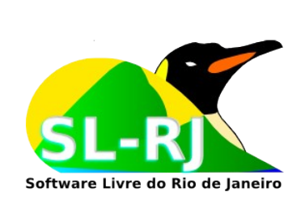

Arduino e Python

Álvaro Justen aka Turicas
Araguaína/TO
13/05/2013
Álvaro Justen aka Turicas
Araguaína/TO
13/05/2013
{twitter.com,
github.com,
youtube.com
}/turicas
turicas.info
alvaro@CursoDeArduino.com.br

www.CursoDeArduino.com.br

emap.fgv.br
| |
|
| |
 |
| |
Arduino?


|

|
Talk is cheap, show me the code!
Guido Van Rossum


i = 42 # inteiro
f = 3.14 # ponto flutuante
c = 1.5 + 5.3j # complexo!
s = "Arduino" # string
t = (1, "python") # tupla
l = [1, 2.3, "ab", [1, "b"]] # lista
d = {'a': 1, 2: 'b',
(1, 2): [3, 4]} # dicionário
if expressao1:
comando1
if expressao2:
comando2
elif expressao3:
comando3
elif expressao4:
comando4
else:
comando5
lista = [1, 3, 4, 'Arduino', 'Python']
print lista[1]
print lista[1:4]
for elemento in lista:
print elemento
arquivo = 'nome.txt'
print arquivo[-3:]
print arquivo[5:]
novo_arquivo = 'nome.do.arquivo.txt'
print novo_arquivo.split('.')
print novo_arquivo.split('.')[-1]
extensao = 'nome.do.arquivo.py'.split('.')[-1]
print extensao
arquivo_1 = open('nome.txt')
for linha in arquivo_1:
print linha
arquivo_1.close()
arquivo_2 = open('nome-2.txt', 'w')
arquivo_2.write('Python rules!')
arquivo_2.close()
sys, os, re, string, zlib socket, urrlib, httplib, imaplib time, datetime, math, random doctest, unittest, xml, xmlrpclib struct, pickle, cPickle, threading logging, decimal
import urllib
url = 'http://CursoDeArduino.com.br/'
pagina = urllib.urlopen(url)
print pagina.read()
#define LED 13
void setup() {
pinMode(LED, OUTPUT);
Serial.begin(9600);
}
void loop() {
if (Serial.available()) {
char c = Serial.read();
if (c == 'H') {
digitalWrite(LED, HIGH);
}
else if (c == 'L') {
digitalWrite(LED, LOW);
}
}
}
#!/usr/bin/env python
import serial
import time
# /dev/ttyACM0 = Arduino Uno on Linux
arduino = serial.Serial('/dev/ttyACM0', 9600)
time.sleep(2) #waiting the initialization...
arduino.write('H') #turns LED *on*
time.sleep(3) #zzz
arduino.write('L') #turns LED *off*
time.sleep(3) #zzz
arduino.close() #let's say goodbye


Automação residencial
através da Internet
Python + Android + Arduino
github.com/turicas/droiduino

Carreira
?

{twitter.com,
github.com,
bitbucket.org,
youtube.com
}/turicas
turicas.info
alvaro@CursoDeArduino.com.br
www.CursoDeArduino.com.br